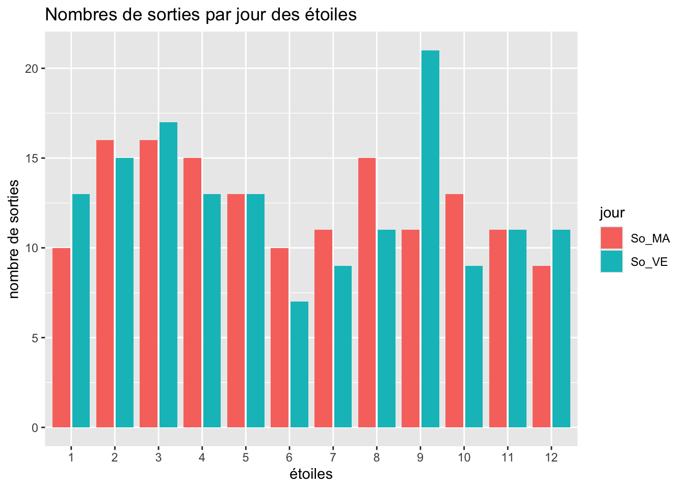
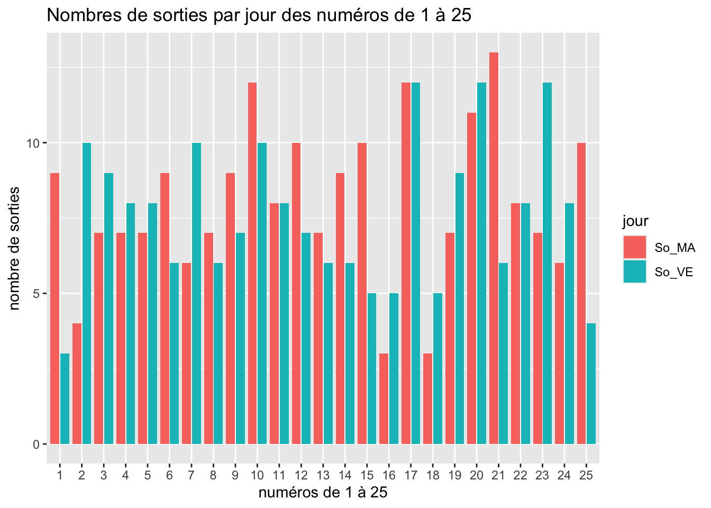
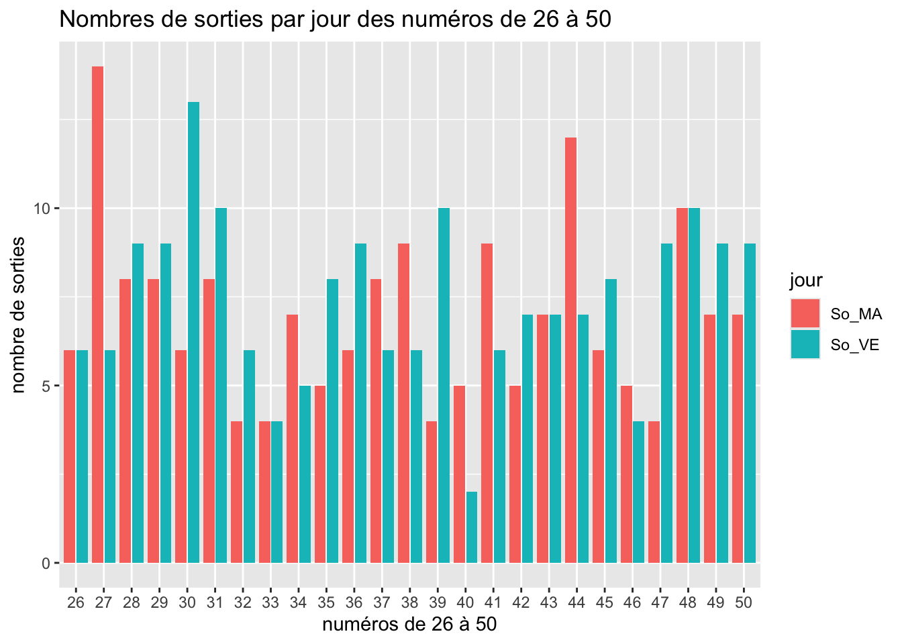

2 Compter
On a les tirages bien propres sur eux. Et on va apprendre à compter après avoir chargé le tidyverse(voir Wickham et al. 2019) et les données.
2.1 Les groupes
Je pense qu’il est illusoire et inutile de se baser simplement sur les numéros sortis. Si c’était possible, cela aurait surement déjà était fait. Et comme ce n’est pas la cas…
2.1.1 Les sorties et les écarts
Les sorties correspondant aux nombres de fois que chaque numéro et étoile est sorti1.
1 en bon français, on appelle ça « enfoncer une porte ouverte »
Les écarts correspondent aux nonbre de tirages entre deux sorties.
Soient les \(3\) tirages suivants :
T1 1 2 3
T2 2 4 5
T3 1 3 6On part du principe que avant ce tirage toutes les sorties et tous les écarts étaient à \(0\).
pour le tirage T1 tous les sorties et les écarts sont à \(0\)
| numéros | 1 | 2 | 3 | 4 | 5 | 6 |
|---|---|---|---|---|---|---|
| sorties | 0 | 0 | 0 | 0 | 0 | 0 |
| écarts | 0 | 0 | 0 | 0 | 0 | 0 |
pour le tirage T2 les sorties du tirage précédent augmentent de \(1\) alors que les écarts restent à \(0\) ; par contre les écarts des numéros non sortis augmentent de \(1\) ;
| numéros | 1 | 2 | 3 | 4 | 5 | 6 |
|---|---|---|---|---|---|---|
| sorties | 1 | 1 | 1 | 0 | 0 | 0 |
| écarts | 0 | 0 | 0 | 1 | 1 | 1 |
pour le tirage T3, c’est pareil
| numéros | 1 | 2 | 3 | 4 | 5 | 6 |
|---|---|---|---|---|---|---|
| sorties | 1 | 2 | 1 | 1 | 1 | 0 |
| écarts | 1 | 0 | 1 | 0 | 0 | 2 |
pour le tirage T4, on met à jour les d’après le tirage T3
| numéros | 1 | 2 | 3 | 4 | 5 | 6 |
|---|---|---|---|---|---|---|
| sorties | 2 | 2 | 2 | 1 | 1 | 1 |
| écarts | 0 | 1 | 0 | 1 | 1 | 0 |
etc.
2.2 Le code
On va fabriquer deux tibble
2.2.1 Les colonnes
S_MA-
pour le nombre de sorties du mardli
S_VE-
pour le nombre de sorties du vendredi
S_TO-
pour le nombre de sorties en tout
E_MA-
pour les écarts du mardi
E_VE-
pour les écarts du vendredi
E_TO-
pour les écarts en tout
Construire le tibble vide2 pour les numéros :
2 pas vide, mais rempli de \(0\)
et pour les étoiles, même motif, même punition :
2.2.2 Classement
Je vais utiliser les verbes de dplyr(voir Wickham et al. 2023).
Le fonctionnement de \(R\) est basé sur les vecteurs. dplyr est basé sur les tibble. C’est précisé en première page de la présentation de dplyr
Aperçu : Le code dplyr n’utilise en entrée et en sortie que des jeux de données. Cela contraste avec les fonctions \(R\) de base qui fonctionnent plus fréquemment avec des vecteurs individuels.
Code
```{r}
for (i in 1:150) {
a <-
euromil |>
slice(i)
j <- a$jt
b <- c(a$b1, a$b2, a$b3, a$b4, a$b5)
e <- c(a$e1, a$e2)
# pour être sûr que les jours ne soient QUE MA ou VE
# un petit test ne fait pas de mal
flag_jour <- FALSE
# pour les tirages du MArdi
if (j == "MA") {
flag_jour <- TRUE
# incrémente les sorties des numéros
num$So_MA[b] <- num$So_MA[b] + 1
# incrémente les sorties des étoiles
eto$So_MA[e] <- eto$So_MA[e] + 1
# incrémente tous les écarts des numéros
num$Ec_MA <- num$Ec_MA + 1
# incrémente tous les écarts des étoiles
eto$Ec_MA <- eto$Ec_MA + 1
# met les écarts des numéros sortis à 0
num$Ec_MA[b] <- 0
# met les écarts des étoiles sorties à 0
eto$Ec_MA[e] <- 0
} # fin du test if (j == "MA")
# pour les tirages du VEndredi
if (j == "VE") {
flag_jour <- TRUE
# incrémente les sorties des numéros
num$So_VE[b] <- num$So_VE[b] + 1
# incrémente les sorties des étoiles
eto$So_VE[e] <- eto$So_VE[e] + 1
# incrémente tous les écarts des numéros
num$Ec_VE <- num$Ec_VE + 1
# incrémente tous les écarts des étoiles
eto$Ec_VE <- eto$Ec_VE + 1
# met les écarts des numéros sortis à 0
num$Ec_VE[b] <- 0
# met les écarts des étoiles sorties à 0
eto$Ec_VE[e] <- 0
} # fin du test if (j == "VE")
# si c'est bien un MA ou un VE qui a été
# traité avant
# traite les tirages en TOut
if (flag_jour == TRUE) {
# incrémente les sorties des numéros
num$So_TO[b] <- num$So_TO[b] + 1
# incrémente les sorties des étoiles
eto$So_TO[e] <- eto$So_TO[e] + 1
# incrémente tous les écarts des numéros
num$Ec_TO <- num$Ec_TO + 1
# incrémente tous les écarts des étoiles
eto$Ec_TO <- eto$Ec_TO + 1
# met les écarts des numéros sortis à 0
num$Ec_TO[b] <- 0
# met les écarts des étoiles sorties à 0
eto$Ec_TO[e] <- 0
} # fin du test if (flag_jour == TRUE)
else {
# si le test du jour a raté
# afficher le tirage incriminé
print("HORREUR, Y A ERREUR !!!!!!!!!")
print(a)
# et on arrête tout
break
} # fin du else
} # fin de la boucle for (i in 1:XX)
```2.2.2.1 Récapitulatif des numéros
- \(50\) numéros
- \(5\) numéros par tirage
- \(150\) tirages « analysés »
Donc :
\(5 \times 150 = 750\) numéros tirés
\(750 \div 50 = 15\) ; en moyenne, chaque numéro serait sorti \(15\) fois pour tous les \(150\) tirages et \(7,5\) fois pour les \(75\) tirages du mardi et du vendredi.
Pour mardi :
Pour vendredi :
En tout :
2.2.2.2 Récapitulatif des étoiles
En partant du même principe que ci-dessus pour les étoiles, on trouve :
\(2 \times 150 = 300\) étoiles tirées ;
\(300 \div 12 = 25\) ; en moyenne, chaque étoile serait sortie \(25\) fois fois pour tous les \(150\) tirages et \(12,5\) fois pour les \(75\) tirages du mardi et du vendredi.
Dont acte :
Pour mardi :
Min. 1st Qu. Median Mean 3rd Qu. Max.
9.00 10.75 12.00 12.50 15.00 16.00 Pour vendredi :
Min. 1st Qu. Median Mean 3rd Qu. Max.
7.0 10.5 12.0 12.5 13.5 21.0 Et en tout :
Min. 1st Qu. Median Mean 3rd Qu. Max.
17.00 21.50 24.50 25.00 28.75 33.00 # A tibble: 6 × 7
numero So_MA So_VE So_TO Ec_MA Ec_VE Ec_TO
<int> <dbl> <dbl> <dbl> <dbl> <dbl> <dbl>
1 1 9 3 12 13 21 27
2 2 4 10 14 14 0 0
3 3 7 9 16 0 6 1
4 4 7 8 15 9 9 18
5 5 7 8 15 5 8 11
6 6 9 6 15 1 5 3# A tibble: 100 × 3
numero jour sorties
<int> <chr> <dbl>
1 1 So_MA 9
2 1 So_VE 3
3 2 So_MA 4
4 2 So_VE 10
5 3 So_MA 7
6 3 So_VE 9
7 4 So_MA 7
8 4 So_VE 8
9 5 So_MA 7
10 5 So_VE 8
# ℹ 90 more rows
# A tibble: 24 × 3
etoile jour sorties
<int> <chr> <dbl>
1 1 So_MA 10
2 1 So_VE 13
3 2 So_MA 16
4 2 So_VE 15
5 3 So_MA 16
6 3 So_VE 17
7 4 So_MA 15
8 4 So_VE 13
9 5 So_MA 13
10 5 So_VE 13
# ℹ 14 more rowsPas très explicite. Faut essayer de faire mieux :
Code

À vue de nez, il n’y a que la \(4\) et la \(11\) qui soient au même nombre de sorties. Il ne semble pas y avoir de règle pour les autres étoiles.
Je vais partager le tableau des numéros en deux pour que ce soit plus visible.
Voyons !
Code

Code

Là aussi, à part les \(11\), \(26\) et \(48\)3, il y a disparité…
3 Ces affirmations sont exactes le 30-07-2024